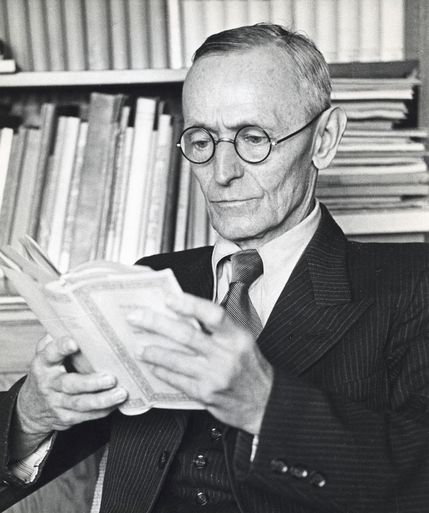

.Hermann Hesse [1877-1962].
Hermann Hesse [1877-1962] qua đời ở Montagnola, Thụy Sĩ, đất nước mà ông trở thành công dân năm 1923, và những tác phẩm của ông có một tiếng vang quốc tế khó có kẻ tương xứng trong nền văn học Đức. Nếu như đã lặng lẽ qua đời vào tuổi 85, ông cũng không phải là nhà văn bị nguyền rủa trong số nhà văn đã sớm lụi tàn trong sự khốn khổ và thờ ơ mà người ta đã phát hiện, hay phát hiện lại, với những tiếc nuối đời đời.
Hermann Hesse đã từng nếm trải vinh quang. Ông được tặng giải Nobel văn học năm 1946; là một người có quan hệ thư tín rộng rãi, ông đã quen biết với mọi nhân vật lớn thời đại ông, từ Thomas Mann đến Romain Rolland, rồi Stefan Zveig, Walther Rathenau. Nhưng tình thế những năm 60 không thuận lợi cho việc đón nhận một tác phẩm chống đối lại sức mạnh của ý thức hệ, về mặt chính trị cũng như văn học. Kể từ đó, mọi việc đã đổi thay nhiều.
Đối với các nhân vật của cuốn tiểu thuyết đầu tiên, Peter Camenzind (1904), câu chuyện về một chàng trai thiếu kiên nhẫn và đầy khúc mắc mà hành trình kết thúc trong sự mơ tưởng mông lung về quê hương, ông viết sau đấy mấy năm rằng: “Tôi không còn có thái độ ở ẩn có phần kỳ quặc của Camenzind; trong quá trình vận động của mình, tôi không tránh được những vấn đề thời đại mình và không hề sống trong tháp ngà như các nhà phê bình nghĩ từ một quan điểm chính trị. Nhưng quan trọng hơn, điều bức thiết hơn đối với tôi không phải là những vấn đề thuộc về nhà nước, về xã hội hay tôn giáo, mà là con người được biệt lập, là nhân cách, là cá thể”. Người ta không thể tóm tắt hay hơn những cái cốt lõi của một sự nghiệp và một tư duy đã đặt sự phát triển của cá nhân vào địa vị trung tâm của những quan tâm của mình.
Sinh năm 1877, thời hoàng đế William khi nước Phổ bước vào hàng ngũ các cường quốc, Hesse đã chịu đựng nhiều trong cái xã hội áp bức đó nhưng ông đã không làm công việc phê bình lịch sử và chính trị. Dưới bánh xe xuất bản năm 1906 miêu tả cái thế giới mà những cá nhân được đưa vào những chiếc cối xay của một nền giáo dục hà khắc, nơi mà tuổi vị thành niên bị biếm nhục. Khi tác phẩm Demian xuất hiện vào năm 1919, Thomas Mann đã nói đến cái “hiệu quả như điện giật” của cuốn sách đối với các thế hệ trẻ sau chiến tranh giống như tác động của cuốn Werther của Goethe.
Sự bào chữa cho phi bạo lực
Những tác phẩm của Hesse thường nói đến tuổi trẻ và tuổi thiếu niên, lứa tuổi tượng trưng cho những nghi vấn lớn, những do dự lớn, những sự lựa chọn. Rất nhanh Hermann Hesse đã có những chọn lựa của mình. Khi nước Đức tham chiến năm 1914, ông đã tránh xa. Ông rút sang Thụy Sĩ và làm việc cho một tổ chức y tế. Ông viết: “đối với những kẻ yêu nước, tôi là một con lợn, đối với những nhà cách mạng, là một tên tư sản phản động”.
Ngày 3 tháng Giêng năm 1917, ông viết: “Người ta cười những người viện lý do tôn giáo hay chính trị để tránh việc nhập ngũ. Theo tôi, họ là dấu hiệu quý báu nhất của thời đại chúng ta, ngay cả khi mỗi người, nhìn riêng rẽ mà nói, được đặt trước những động cơ kỳ quái… người ta phải đưa lại cho những ai từ chối quân dịch bằng những lý do đạo lý cái khả năng làm một công việc dân sự. Có thể cái đó là không thể thực hiện được, chưa thể, nhưng chắc chắn nó sẽ đến… Và điều đó không thể có được nếu một số lượng cá nhân nào đó bị khuấy động bởi tất cả sức mạnh của một tình cảm, đã không có can đảm phản kháng lại cái đa số đang ngự trị…”.
Sự biện minh cho chủ trương phi bạo lực sẽ tìm thấy sự hiện thân trong nhân vật Gandhi, một hình ảnh về một sự nhân đạo đích thực. Hesse khâm phục Gandhi, không chỉ vì sự trung thành của ông đối với một lý tưởng mà vì ông đã không chịu nép mình dưới bất kỳ một tôn giáo nào. Đối với một tín đồ Tin Lành như Hesse, đấy là sự khác biệt lớn lao so với Luther, “người mà sau khi bị trật tự cũ tấn công đã trao lực lượng của mình cho nhà nước, cho các ông hoàng và bỏ rơi những người nông dân”.
Theo cách của mình, Hesse bao giờ cũng là kẻ nổi loạn và không nghi ngờ gì chính cái đó làm bạn đọc đánh giá cao ông. Sự chống đối thường xuyên của ông với chủ nghĩa tư bản với những sức mạnh của đồng tiền và những thể chế đủ loại đã làm cho ông được coi là một nhà tiên tri. Trong những năm 70, những người dân Anglo - Saxon trẻ đã tìm thấy trong tác phẩm của ông sự chối đẩy chủ nghĩa vật chất và xã hội tiêu thụ. Đúng là những tác phẩm của ông bao giờ cũng giới thiệu những khả năng đồng nhất hóa một cách dễ dàng, như với Sinclear trong Demian hay với Josef Knecht trong Trò chơi ngọc thủy tinh. Nhưng Hesse không hề muốn là một kẻ truyền đạo hay một nhà tiên tri. Mỗi người có con đường riêng của mình: “Không nên hy vọng vào một học thuyết hoàn hảo mà vào sự hoàn thiện của chính bản thân anh. Sự thánh thiện là ở trong anh, không phải trong những ý tưởng hay trong sách vở. Chân lý tự sống, nó không tự dạy dỗ mình”.
Sự hấp dẫn kỳ diệu
Ông đã đưa ra một thí dụ trong Siddharta (1922) (tức hoàng tử Tất Đạt Đa trước khi tìm đường giác ngộ để thành Phật Thích Ca) được in ra đến 5 triệu bản bằng 30 thứ tiếng, trong đó có 12 tiếng địa phương ở Ấn Độ. Không hề muốn cải biến phương Tây theo tư tưởng phương Đông, ngược lại cuốn sách vạch lại một lộ trình của sự giải phóng cá nhân và bắc chiếc cầu trên các nền văn hóa, tìm một điểm gặp gỡ cho tất cả mọi người. Điểm hội tụ đó, lúc nào cũng chỉ tiếp cận mà không nắm được, có thể có tên gọi là “tình yêu” nếu người ta hiểu từ này theo nghĩa một sự hiến dâng cho thiên nhiên và vũ trụ.
Cái ý thức trở thành một phần tử trong cái “đại tổng thể” đó là rất cần để thuyết phục xã hội hiện đại của chúng ta, trong đó việc bảo vệ khá nản lòng giới tự nhiên vẫn chỉ là một ảo tưởng tập thể, vào một thời đại mà những dự án cách mạng đã thất bại, nơi mà những khế ước xã hội mới do các chính khách đưa ra thường vẫn chỉ là một khái niệm trống rỗng. “Bây giờ lý tưởng chính trị đã không tìm thấy ở nơi có quyền lực chính trị, người ta cần có đầu óc thông minh và sự mẫn cảm bản năng, vốn không đến từ những môi trường chính trị, nếu như người ta muốn tránh đi hay làm giảm thiểu đi những thảm họa”. Cái thông điệp không rõ ràng, nhưng nó lại mang sức hấp dẫn có lẽ bởi chính sự không rõ ràng đó và sự hấp dẫn huyền diệu mà nó tạo ra.